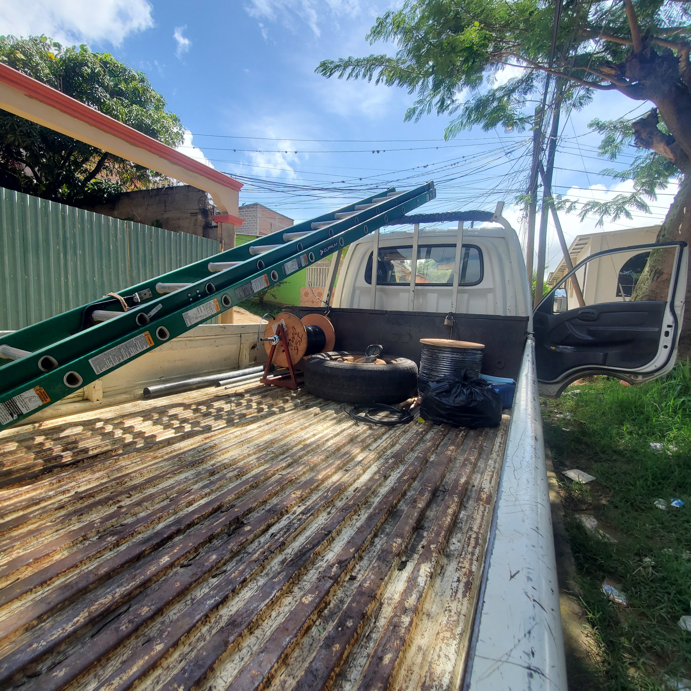

ISG
ISG
ISG
Aqui se hacen varios trabajos, los cuales pueden ser
dificiles como instalar cable análogo en un hogar, hasta sencillos
como cambiar un módem que no funciona, hay muchas actividades para trabajar como:
-Verificar por qué no hay señal en cable análogo.
-Revisar que el módem funcione correctamente.
-Instalar cable análogo.
-Reparar cable coaxial reventado.
-Instalacion de Internet.
